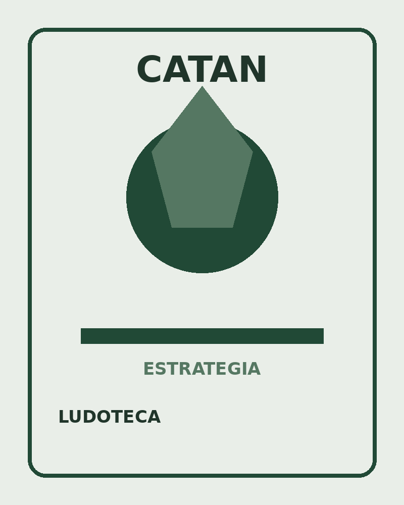

Estrategia
Catan
En Catan, los jugadores deben desarrollar sus territorios, conseguir recursos y negociar con otros participantes para construir caminos, poblados y ciudades.
👥 3-4 jugadores
⏱ 60-90 min
Ver reglamento →